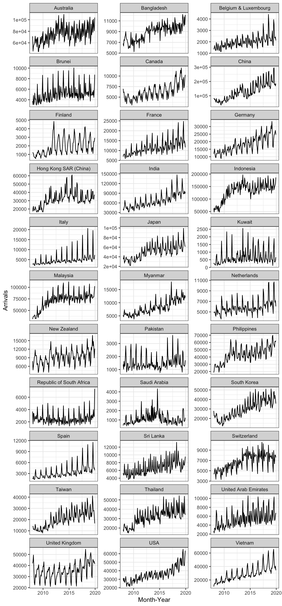
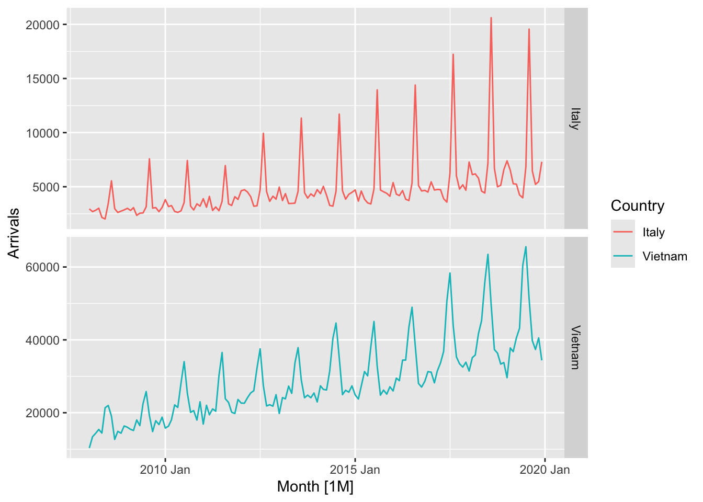
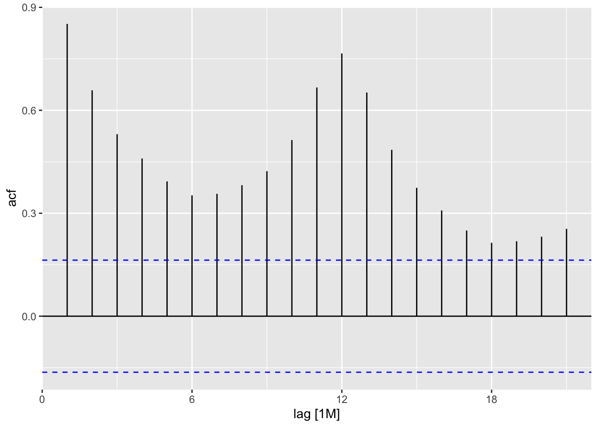
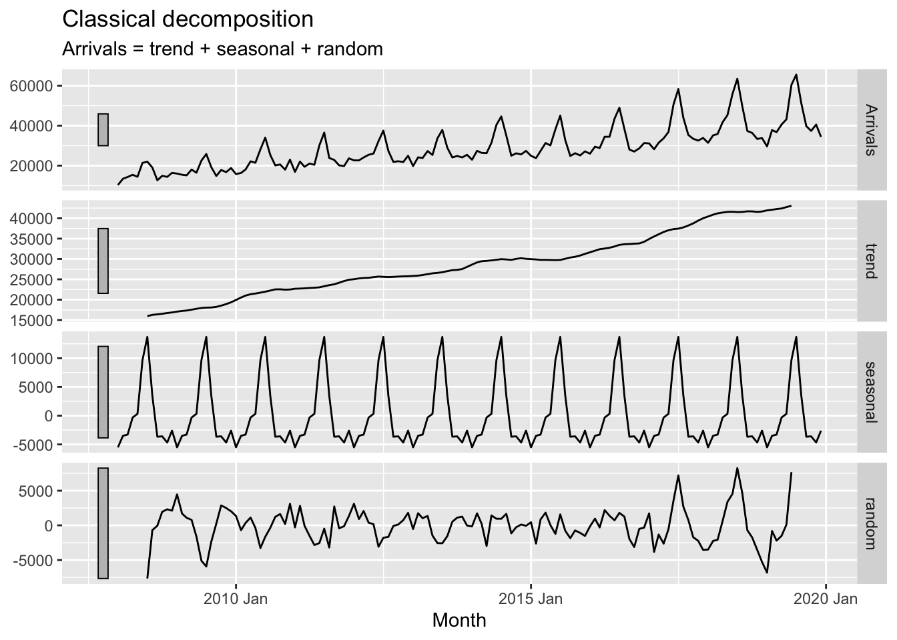

Show the code
pacman::p_load(tidyverse, tsibble, feasts, fable, seasonal)tidyverts is a family of R packages specially designed for visualising, analysing and forecasting time-series data conforming to tidyverse framework. It is the work of Dr. Rob Hyndman, professor of statistics at Monash University, and his team. The family of R packages are intended to be the next-generation replacement for the very popular forecast package, and is currently under active development.
Load and launch packages
Use tool to install packages: tsibble, feasts, fable and seasonal first.
pacman::p_load(tidyverse, tsibble, feasts, fable, seasonal)ts_data <- read_csv("data/visitor_arrivals_by_air.csv")
head(ts_data)# A tibble: 6 × 34
`Month-Year` `Republic of South Africa` Canada USA Bangladesh Brunei China
<chr> <dbl> <dbl> <dbl> <dbl> <dbl> <dbl>
1 1/1/2008 3680 6972 31155 6786 3729 79599
2 1/2/2008 1662 6056 27738 6314 3070 82074
3 1/3/2008 3394 6220 31349 7502 4805 72546
4 1/4/2008 3337 4764 26376 7333 3096 76112
5 1/5/2008 2089 4460 26788 7988 3586 64808
6 1/6/2008 2515 3888 29725 8301 5284 55238
# ℹ 27 more variables: `Hong Kong SAR (China)` <dbl>, India <dbl>,
# Indonesia <dbl>, Japan <dbl>, `South Korea` <dbl>, Kuwait <dbl>,
# Malaysia <dbl>, Myanmar <dbl>, Pakistan <dbl>, Philippines <dbl>,
# `Saudi Arabia` <dbl>, `Sri Lanka` <dbl>, Taiwan <dbl>, Thailand <dbl>,
# `United Arab Emirates` <dbl>, Vietnam <dbl>, `Belgium & Luxembourg` <dbl>,
# Finland <dbl>, France <dbl>, Germany <dbl>, Italy <dbl>, Netherlands <dbl>,
# Spain <dbl>, Switzerland <dbl>, `United Kingdom` <dbl>, Australia <dbl>, …In the code chunk below, dmy() of lubridate package is used to convert data type of Month-Year field from Character to Date.
ts_data$`Month-Year` <- dmy(
ts_data$`Month-Year`) #to replace the column.
head(ts_data)# A tibble: 6 × 34
`Month-Year` `Republic of South Africa` Canada USA Bangladesh Brunei China
<date> <dbl> <dbl> <dbl> <dbl> <dbl> <dbl>
1 2008-01-01 3680 6972 31155 6786 3729 79599
2 2008-02-01 1662 6056 27738 6314 3070 82074
3 2008-03-01 3394 6220 31349 7502 4805 72546
4 2008-04-01 3337 4764 26376 7333 3096 76112
5 2008-05-01 2089 4460 26788 7988 3586 64808
6 2008-06-01 2515 3888 29725 8301 5284 55238
# ℹ 27 more variables: `Hong Kong SAR (China)` <dbl>, India <dbl>,
# Indonesia <dbl>, Japan <dbl>, `South Korea` <dbl>, Kuwait <dbl>,
# Malaysia <dbl>, Myanmar <dbl>, Pakistan <dbl>, Philippines <dbl>,
# `Saudi Arabia` <dbl>, `Sri Lanka` <dbl>, Taiwan <dbl>, Thailand <dbl>,
# `United Arab Emirates` <dbl>, Vietnam <dbl>, `Belgium & Luxembourg` <dbl>,
# Finland <dbl>, France <dbl>, Germany <dbl>, Italy <dbl>, Netherlands <dbl>,
# Spain <dbl>, Switzerland <dbl>, `United Kingdom` <dbl>, Australia <dbl>, …Now we see it’s converted to date data type.
ts object versus tibble objectts_data is a tibble objectts_data# A tibble: 144 × 34
`Month-Year` `Republic of South Africa` Canada USA Bangladesh Brunei China
<date> <dbl> <dbl> <dbl> <dbl> <dbl> <dbl>
1 2008-01-01 3680 6972 31155 6786 3729 79599
2 2008-02-01 1662 6056 27738 6314 3070 82074
3 2008-03-01 3394 6220 31349 7502 4805 72546
4 2008-04-01 3337 4764 26376 7333 3096 76112
5 2008-05-01 2089 4460 26788 7988 3586 64808
6 2008-06-01 2515 3888 29725 8301 5284 55238
7 2008-07-01 2919 5313 33183 9004 4070 80747
8 2008-08-01 2471 4519 27427 7913 4183 66625
9 2008-09-01 2492 3421 21588 7549 3160 52649
10 2008-10-01 3023 4756 25112 7527 2983 54423
# ℹ 134 more rows
# ℹ 27 more variables: `Hong Kong SAR (China)` <dbl>, India <dbl>,
# Indonesia <dbl>, Japan <dbl>, `South Korea` <dbl>, Kuwait <dbl>,
# Malaysia <dbl>, Myanmar <dbl>, Pakistan <dbl>, Philippines <dbl>,
# `Saudi Arabia` <dbl>, `Sri Lanka` <dbl>, Taiwan <dbl>, Thailand <dbl>,
# `United Arab Emirates` <dbl>, Vietnam <dbl>, `Belgium & Luxembourg` <dbl>,
# Finland <dbl>, France <dbl>, Germany <dbl>, Italy <dbl>, …We can also use class() to check.
ts_data_ts to be a ts objectts_data_ts <- ts(ts_data)
head(ts_data_ts) Month-Year Republic of South Africa Canada USA Bangladesh Brunei China
[1,] 13879 3680 6972 31155 6786 3729 79599
[2,] 13910 1662 6056 27738 6314 3070 82074
[3,] 13939 3394 6220 31349 7502 4805 72546
[4,] 13970 3337 4764 26376 7333 3096 76112
[5,] 14000 2089 4460 26788 7988 3586 64808
[6,] 14031 2515 3888 29725 8301 5284 55238
Hong Kong SAR (China) India Indonesia Japan South Korea Kuwait Malaysia
[1,] 17103 41639 62683 37673 27937 284 31352
[2,] 21089 37170 47834 35297 22633 241 35030
[3,] 23230 44815 64688 42575 22876 206 37629
[4,] 17688 49527 58074 26839 20634 193 37521
[5,] 19340 67754 57089 30814 22785 140 38044
[6,] 19152 57380 70118 31001 22575 354 40419
Myanmar Pakistan Philippines Saudi Arabia Sri Lanka Taiwan Thailand
[1,] 5269 1395 18622 406 5289 13757 18370
[2,] 4643 1027 21609 591 4767 13921 16400
[3,] 6218 1635 28464 626 4988 11181 23387
[4,] 7324 1232 30131 644 7639 11665 24469
[5,] 5395 1306 30193 470 5125 11436 21935
[6,] 5542 1996 25800 772 4791 10689 19900
United Arab Emirates Vietnam Belgium & Luxembourg Finland France Germany
[1,] 2652 10315 1341 1179 6918 11982
[2,] 2230 13415 1449 1207 7876 13256
[3,] 3353 14320 1674 1071 8066 15185
[4,] 3245 15413 1426 768 8312 11604
[5,] 2856 14424 1243 690 7066 9853
[6,] 4292 21368 1255 624 5926 9347
Italy Netherlands Spain Switzerland United Kingdom Australia New Zealand
[1,] 2953 4938 1668 4450 41934 71260 7806
[2,] 2704 4885 1568 4381 44029 45595 4729
[3,] 2822 5015 2254 5015 49489 53191 6106
[4,] 3018 4902 1503 5434 35771 56514 7560
[5,] 2165 4397 1365 4427 24464 57808 9090
[6,] 2022 4166 1446 3359 22473 63350 9681Check how the conversion goes.
class(ts_data)[1] "spec_tbl_df" "tbl_df" "tbl" "data.frame" class(ts_data_ts)[1] "mts" "ts" "matrix" "array" tibble object to tsibble objectA tsibble (or tbl_ts) is a data- and model-oriented object. Compared to the conventional time series objects in R, for example ts, zoo, and xts, the tsibble preserves time indices as the essential data column and makes heterogeneous data structures possible. Beyond the tibble-like representation, key comprised of single or multiple variables is introduced to uniquely identify observational units over time (index).
The code chunk below converting ts_data from tibble object into tsibble object by using as_tsibble() of tsibble R package.
ts_tsibble <- ts_data %>%
mutate(Month = yearmonth(`Month-Year`)) %>%
as_tsibble(index = `Month`)Learning from the code
mutate() of dplyr package is used to derive a new field by transforming the data values in Month-Year field into month-year format. The transformation is performed by using yearmonth() of tsibble package. + as_tsibble() is used to convert the tibble data frame into tsibble data frame.
ts_tsibble# A tsibble: 144 x 35 [1M]
`Month-Year` `Republic of South Africa` Canada USA Bangladesh Brunei China
<date> <dbl> <dbl> <dbl> <dbl> <dbl> <dbl>
1 2008-01-01 3680 6972 31155 6786 3729 79599
2 2008-02-01 1662 6056 27738 6314 3070 82074
3 2008-03-01 3394 6220 31349 7502 4805 72546
4 2008-04-01 3337 4764 26376 7333 3096 76112
5 2008-05-01 2089 4460 26788 7988 3586 64808
6 2008-06-01 2515 3888 29725 8301 5284 55238
7 2008-07-01 2919 5313 33183 9004 4070 80747
8 2008-08-01 2471 4519 27427 7913 4183 66625
9 2008-09-01 2492 3421 21588 7549 3160 52649
10 2008-10-01 3023 4756 25112 7527 2983 54423
# ℹ 134 more rows
# ℹ 28 more variables: `Hong Kong SAR (China)` <dbl>, India <dbl>,
# Indonesia <dbl>, Japan <dbl>, `South Korea` <dbl>, Kuwait <dbl>,
# Malaysia <dbl>, Myanmar <dbl>, Pakistan <dbl>, Philippines <dbl>,
# `Saudi Arabia` <dbl>, `Sri Lanka` <dbl>, Taiwan <dbl>, Thailand <dbl>,
# `United Arab Emirates` <dbl>, Vietnam <dbl>, `Belgium & Luxembourg` <dbl>,
# Finland <dbl>, France <dbl>, Germany <dbl>, Italy <dbl>, …In order to visualise the time-series data effectively, we need to organise the data frame from wide to long format by using pivot_longer() of tidyr package.
ts_longer <- ts_data %>%
pivot_longer(cols = c(2:34),
names_to = "Country",
values_to = "Arrivals")ts_longer %>%
filter(Country == "Vietnam") %>%
ggplot(aes(x = `Month-Year`,
y = Arrivals)) +
geom_line(size = 0.5, color = "#3AA6B9")
Learning from the code
filter() of dplyr package is used to select records belong to Vietnam.
geom_line() of ggplot2 package is used to plot the time-series line graph.
To plot multiple countries
ggplot(data = ts_longer,
aes(x = `Month-Year`,
y = Arrivals,
color = Country))+
geom_line(size = 0.5) +
theme(legend.position = "bottom",
legend.box.spacing = unit(0.5, "cm"))
In order to provide effective comparison, facet_wrap() of ggplot2 package is used to create small multiple line graph also known as trellis plot.
ggplot(data = ts_longer,
aes(x = `Month-Year`,
y = Arrivals))+
geom_line(size = 0.5) +
facet_wrap(~ Country,
ncol = 3,
scales = "free_y") + #y is not fixed axis.
theme_bw()
tsibble_longer <- ts_tsibble %>%
pivot_longer(cols = c(2:34),
names_to = "Country",
values_to = "Arrivals")A seasonal plot is similar to a time plot except that the data are plotted against the individual seasons in which the data were observed.
A season plot is created by using gg_season() of feasts package. Below assume season is MONTH.
tsibble_longer %>%
filter(Country == "Italy" |
Country == "Vietnam" |
Country == "United Kingdom" |
Country == "Germany") %>%
gg_season(Arrivals)
A cycle plot shows how a trend or cycle changes over time. We can use them to see seasonal patterns. Typically, a cycle plot shows a measure on the Y-axis and then shows a time period (such as months or seasons) along the X-axis. For each time period, there is a trend line across a number of years.
We can start with the plot below, before digging deeper. Note that both lines reveal clear sign of seasonal patterns but not the trend.
tsibble_longer %>%
filter(Country == "Vietnam" |
Country == "Italy") %>%
autoplot(Arrivals) +
facet_grid(Country ~ ., scales = "free_y")
<feast package> In the code chunk below, cycle plots using gg_subseries() of feasts package are created. Notice that the cycle plots show not only seasonal patterns but also trend, by month.
tsibble_longer %>%
filter(Country == "Vietnam" |
Country == "Italy") %>%
gg_subseries(Arrivals) 
increasing trend.
rate high
July and August are higher than others.
Italy: most months are very low, except Aug.
Trend, seasonal and error
Time series decomposition allows us to isolate structural components such as trend and seasonality from the time-series data.
In feasts package, time series decomposition is supported by ACF(), PACF(), CCF(), feat_acf(), and feat_pacf(). The output can then be plotted by using autoplot() of feasts package.
In the code chunk below, ACF() of feasts package is used to plot the ACF curve of visitor arrival from Vietnam.
tsibble_longer %>%
filter(`Country` == "Vietnam") %>%
ACF(Arrivals) %>%
autoplot()
In the code chunk below, PACF() of feasts package is used to plot the Partial ACF curve of visitor arrival from Vietnam.
tsibble_longer %>%
filter(`Country` == "Vietnam") %>%
PACF(Arrivals) %>%
autoplot()
tsibble_longer %>%
filter(`Country` == "Vietnam" |
`Country` == "Italy" |
`Country` == "United Kingdom" |
`Country` == "China") %>%
ACF(Arrivals) %>%
autoplot()
Observation
ACF(): compare with the previous (relation with the previous) autoplot() gives the plotting. - China and Vietnam are similar, but not the same. China is 6 months period, while VN is 12 months. - blues lines are confidence intervals to check whether they are statistically significant. China is more significant then VN. The rest are weak. UK - trend is not significant, but still have seasonal.
On the other hand, code chunk below is used to prepare a trellis plot of PACFs for visitor arrivals from Vietnam, Italy, United Kingdom and China. PACF() has Lag 1 and 2, … keeps looking at the correlation. It is the correlation between two variables under the assumption that we know and take into account the values of some other set of variables. For instance, consider a regression context in which y is the response variable and X1, X2, and X3 are predictor variables. The partial correlation between y and X3 is the correlation between the variables determined taking into account how both y and X3 are related to X1 and X2.
tsibble_longer %>%
filter(`Country` == "Vietnam" |
`Country` == "Italy" |
`Country` == "United Kingdom" |
`Country` == "China") %>%
PACF(Arrivals) %>%
autoplot()
In the code chunk below, STL() of feasts package is used to decomposite visitor arrivals from Vietnam data.
tsibble_longer %>%
filter(`Country` == "Vietnam") %>%
model(stl = STL(Arrivals)) %>%
components() %>%
autoplot()
Trend and Seasonal need to compose well, both needs to be clear.
tsibble_longer %>%
filter(`Country` == "Vietnam") %>%
model(
classical_decomposition(
Arrivals, type = "additive")) %>%
components() %>%
autoplot()
Need to keep the last few time hold-out data.
In this example we will use the last 12 months for hold-out and the rest for training.
First, an extra column called Type indicating training or hold-out will be created by using mutate() of dplyr package. It will be extremely useful for subsequent data visualisation.
vietnam_ts <- tsibble_longer %>%
filter(Country == "Vietnam") %>%
mutate(Type = if_else(
`Month-Year` >= "2019-01-01",
"Hold-out", "Training"))Next, a training data set is extracted from the original data set by using filter() of dplyr package.
vietnam_train <- vietnam_ts %>%
filter(`Month-Year` < "2019-01-01")the residual should look normal distribution so it means good forecasting.
7.4
See the stats result and plotting result on forecast and observed value.
Good fitting: buffer should be very thin.
only need to see the last two (zoom in)